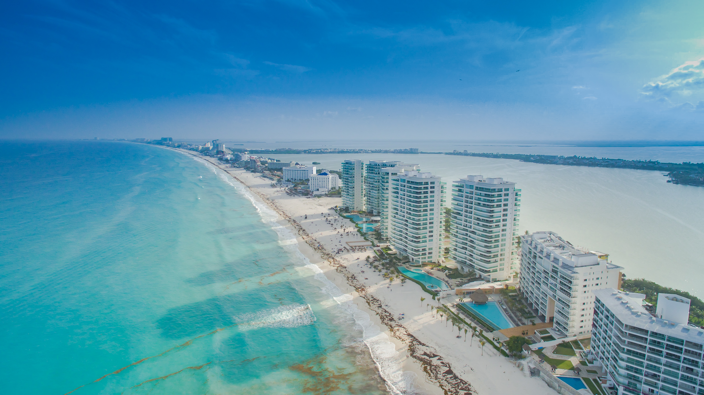

Destinos turisticos más concurridos
San Miguel de Allende, Guanajuato
Ciudad colonial
- Esta ciudad colonial es famosa por su arquitectura histórica, sus calles empedradas y su vibrante vida cultural.

Bernal, Querétaro:
Pueblo Mágico
-
Este Pueblo Mágico es famoso por su imponente monolito
llamado “La Peña de Bernal”. Los visitantes pueden escalar

Cancún, Quintana Roo
Playas üòé
- Con sus playas de arena blanca y aguas turquesas, Cancún es un paraíso tropical. Es un destino favorito para los amantes del sol y el mar.